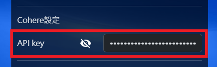

- 註冊一個Cohere帳號，也可以使用Google或Github帳號登入
-
登入Cohere後進入Dashboard的
API keys頁面
即可在下方的Trial keys看到一組金鑰，將其顯示(點選眼睛圖示)後可按眼睛圖示旁的複製按鈕複製金鑰
-
複製之後貼到【Tataru Assistant】裡的【API設定】>【Cohere設定】的API
KEY欄位裡(按下Ctrl+V可貼上)，設定完畢後請記得儲存您的設定

-
模型預設為【command-r】，若要更改請從
https://docs.cohere.com/v2/docs/models
複製Model代號
-
儲存完畢後請回到【翻譯設定】將【翻譯引擎】更改為【Cohere】即可開始使用

-
若想要使用流量計費方案，請至
API keys頁面
點選【Get your Production key】，填入相關資料即可取得Production key